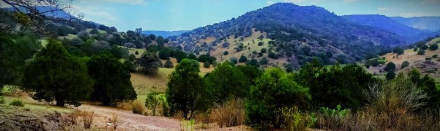
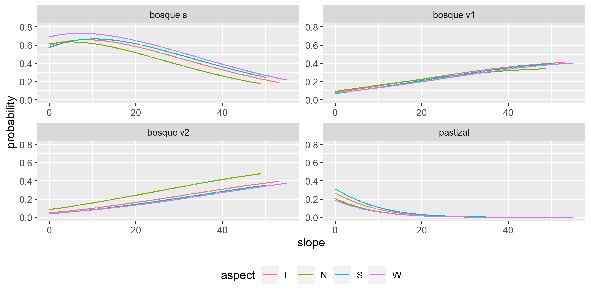

Influencia de la topografía en la distribución de las comunidades vegetales del Área Natural Protegida Sierra Fría en Aguascalientes, México.

1. Selección de imágenes
SENTINEL-2 lleva un instrumento óptico que muestrea 13 bandas espectrales: cuatro bandas a 10 m, seis bandas a 20 m y tres bandas a una resolución espacial de 60 m. La anchura de la franja orbital es de 290 km. Se obtuvo una escena nivel 1C con datos de reflectancia TOA con geometría geográfica. Los gránulos, también llamados teselas, son ortoimágenes de 110x110 km2 en proyección UTM/WGS84.
El instrumento multiespectral (MSI) utiliza un concepto de barrido de empuje. Un sensor de barrido funciona recopilando filas de datos de imágenes a lo largo de la franja orbital y utiliza el movimiento hacia adelante de la nave espacial a lo largo de la trayectoria de la órbita para proporcionar nuevas filas para la adquisición. La luz reflejada hasta el instrumento MSI desde la Tierra y su atmósfera es recogida por un telescopio de tres espejos (M1, M2 y M3) y enfocada, a través de un divisor de haz, en dos conjuntos de plano focal (FPA): uno para las diez longitudes de onda VNIR y otro para las tres longitudes de onda SWIR. En la Tabla 1 se muestra la descripción de las 13 bandas del sensor MSI.
Tabla 1. Descripción espectral y espacial de las bandas del sensor MSI.
| Número de banda | Longitud de onda central (nm) | Ancho de banda (nm) | Resolución espacial (m) |
|---|---|---|---|
| 1 | 442.7 | 20 | 60 |
| 2 | 492.7 | 65 | 10 |
| 3 | 559.8 | 35 | 10 |
| 4 | 664.6 | 30 | 10 |
| 5 | 704.1 | 14 | 20 |
| 6 | 740.5 | 14 | 20 |
| 7 | 782.8 | 19 | 20 |
| 8 | 832.8 | 105 | 10 |
| 8a | 864.7 | 21 | 20 |
| 9 | 945.1 | 19 | 60 |
| 10 | 1,373.5 | 29 | 60 |
| 11 | 1,613.7 | 90 | 20 |
| 12 | 2,202.4 | 174 | 20 |
Escena descargada:
D:\Documents\GIS\IMG_SAT\S2A_MSIL1C_20230313T172111_N0509_R012_T13QGE_20230313T222343\
2. Corrección atmosférica Dark Object Substraction (DOS)
Polígono:
D:\Documents\GIS\IMG_SAT\S2A_MSIL1C_20230313T172111_N0509_R012_T13QGE_20230313T222343\ANPSF_2023_ZONA.shp
Salida:
D:\Documents\GIS\IMG_SAT\S2A_MSIL1C_20230313T172111_N0509_R012_T13QGE_20230313T222343\DOS_20230313\DOS_20230313
3. Corrección de iluminación por topografía
Se identificaron en el archivo de la imagen MSI los datos de valor medio del ángulo solar: ángulo cenital y ángulo azimutal (Tabla 2).
Tabla 2. Datos de orientación solar de la escena MSI.
| Ángulo cenital (°) | Ángulo azimutal (°) |
|---|---|
| 31.9443 | 138.7315 |
El valor del ángulo cenital se utilizó para obtener el ángulo de elevación solar como se indica a continuación:
sh = 90 - ca
donde:
sh: es el valor del ángulo de elevación solar.
ca: es el valor del ángulo cenital
Entonces, los valores de ángulo solar ingresados en SAGA para realizar la corrección de iluminación fueron el ángulo azimutal y el ángulo de elevación solar.
Finalmente, se ingresaron en SAGA los parámetros de corrección complementarios que se muestran en la Tabla 3.
Tabla 3. Parámetros para la corrección de iluminación por factor C.
| Banda | Max cells | Minnaert |
|---|---|---|
| 3 | 49 | 0.5 |
| 4 | 49 | 0.5 |
| 8 | 225 | 0.5 |
| 11 | 25 | 0.5 |
Como resultado se obtuvo una imagen mejorada con mayor contraste entre las coberturas presentes en la escena como se muestra en la Figura 1.

Figura 1. (A) Imagen sin corrección de iluminación; (B) Imagen con iluminación corregida por método de factor C.
Datos de elevación:
D:\Documents\GIS\AGS_ANPSF\ANPSF_2023\MED_20230313_ANPSF.tif
Salida:
D:\Documents\GIS\IMG_SAT\S2A_MSIL1C_20230313T172111_N0509_R012_T13QGE_20230313T222343\C3_20230313\C_20230313_B0stack_raster.tif
4. Cálculo de índices de vegetación
NDVI = (n - r) ÷ (n + r)
IVV = (n - r) s*s ÷ (n + r) s*s
Donde:
n: banda infra-rojo cercano (b8).
r: banda rojo (b4)
s: banda infra rojo (bs).
El NDVI tiene una distribución leptocúrtica al compararlo con la distribución del IVV como se puede observar en la Figura... continuar

Figura 2. En color naranja podemos observar el histograma con los datos del IVV con mayor amplitud y varianza que el NDVI en color azul.
Salida:
D:\Documents\GIS\IMG_SAT\S2A_MSIL1C_20230313T172111_N0509_R012_T13QGE_20230313T222343\INDEX VVI
Fuentes:
https://www.nv5geospatialsoftware.com/docs/vegetationindices.html
5. Clasificación por conglomerados
Clasificación k-means
Se trata de un algoritmo de clasificación iterativo en el que se definen n clases dentro de las que serán categorizados los elementos de un conjunto de observaciones. El mecanismo del algoritmo consiste en asignar n centroides aleatorios dentro del espacio muestral. Posteriormente se miden las ... "distancias" entre cada centroide y los puntos más cercanos de cada centroide, hecho esto, el algoritmo recalcula la posición de cada centroide en función de las distancias promedio y vuelve a calcular las distancias a los puntos desde la nueva posición de los centroides. Este proceso se repite de manera iterativa hasta que las posiciones de los centroides se estabilizan y los puntos dejan de cambiar de centroide como se muestra en la animación de la Figura 2. Fig 2. Representación animada del funcionamiento del algoritmo de
clasificación k-means.
Fig 2. Representación animada del funcionamiento del algoritmo de
clasificación k-means.
Una vez procesados los datos de radiación registrados desde la plataforma satelital Sentinel 2 a través del sensor MSI, se realizaron dos procesos de clasificación no supervisada, el primero sobre la imagen NDVI y otro sobre la imgen IVV obteniendo como resultado dos imágenes clasificadas:
a) clases NDVI
b) clases IVV
En el proceso se utilizó el algoritmo de clasificación por conglomerados k-means con los parámetros que a continuación se describen:
Número de clases: 3
Iteraciones: 50
Para determinar el número de clusters o clases, se siguió el método del "codo" en el que se calcula la suma de cuadrados con diferentes cantidades de clusters. Se selecciona el número de clusters a partir del cual la diferencia en las sumas de cuadrados comienza a ser menos significativa.

Fig 3. Número óptimo de clases. En la gráfica izquierda podemos observar que a partir de tres clusters la diferencia en las sumas de cuadrados se estabiliza. En la gráfica derecha podemos ver que la suma de cuadrados alcanza un máximo en tres antes de empezar a caer.
A partir de las tres clases o categorías obtenidas se calcularon las estadísticas por zona (clase) de los índices de vegetación NDVI y IVV (Tabla 6).
Tabla 6. Estadísticas de los índices de vegetación en cada clase o categoría obtenida.
| Clase | NDVI media-desv | IVV media-desv | ||
|---|---|---|---|---|
| Clase 1 | 0.1267 | 0.0164 | 0.3657 | 0.0447 |
| Clase 2 | 0.1672 | 0.0136 | 0.4827 | 0.0300 |
| Clase 3 | 0.2289 | 0.0285 | 0.5839 | 0.0350 |
Se observa una mayor amplitud en los valores del IVV con respecto al NDVI, así como también una mayor varianza como resultado de introducir la información de la banda 11 y por la relación que tiene la presencia de humedad con la información de la banda 4 y 8.
La descripción de las clases obtenidas se muestran en la Tabla 8. Las tres clases representan distintos tipos de cobertura vegetal en función del vigor vegetal relacionado con el verdor y con eel contenido de humedad en la planta, aspectos que se expresan a través de la relaciones entre las bandas 4, 8 y 11.
Tabla 8. Descripción de las clases obtenidas por medio de la clasificación k-means.
| Clase | Conteo NDVI - IVV | Descripción | |
|---|---|---|---|
| 1 | 467,748 | 237,890 | Pastizal |
| 2 | 539,231 | 520,966 | Bosque vigor 1 |
| 3 | 144,069 | 392,192 | Bosque vigor 2 |
Notamos que el conteo de pixeles identificados en cada clase difiere notablemente en los resultados de la clasificación a partir del NDVI y del IVV. Comparado con los resultados a partir del IVV, en la clasificación NDVI hay un mayor conteo de pixeles en la categoría de Pastizal y un menor conteo en la categoría de Bosque vigor 2. Lo anterior podemos observarlo con mucha claridad en la Figura 3.

En un primer análisis visual fotointerpretativo, los resultados de la clasificación hecha sobre el IVV parecen ser más afines a las características reales de las coberturas vegetales presentes en la zona de estudio. La clasificación NDVI detecta una mayor cantidad de pixeles dentro de la clase 1 asociada a Pastizal, mientras que clasifica muy pocas zonas como Bosque vigor 2. En contraste, la clasificación IVV logra diferenciar con mayor definición y consistencia aquellas zonas con mínima o nula vegetación, Pastizal, de aquellas otras zonas de matorral y bosque senescente disperso que para fines del presente estudio hemos denominado Bosque vigor 1.
Fuentes:
https://www.ncbi.nlm.nih.gov/pmc/articles/PMC5148156/
https://macwright.com/2013/02/18/literate-jenks.html
https://stackoverflow.com/questions/54841674/plot-kmeans-clusters-and-classification-for-1-dimensional-data
https://www.dannyadam.com/blog/2019/07/kmeans1d-globally-optimal-efficient-1d-k-means/
https://pypi.org/project/kmeans1d/
https://arxiv.org/abs/1701.07204
https://www.scielo.org.mx/scielo.php?script=sci_arttext&pid=S1405-04712011000300004
Salida:
D:\Documents\GIS\IMG_SAT\S2A_MSIL1C_20230313T172111_N0509_R012_T13QGE_20230313T222343\CLASSIFY_LANDCOVER\kmeans pca.hdr
D:\Documents\GIS\IMG_SAT\S2A_MSIL1C_20230313T172111_N0509_R012_T13QGE_20230313T222343\CLASSIFY_LANDCOVER\kmeans ivv.hdr
D:\Documents\GIS\IMG_SAT\S2A_MSIL1C_20230313T172111_N0509_R012_T13QGE_20230313T222343\CLASSIFY_LANDCOVER\roi pca.roi
D:\Documents\GIS\IMG_SAT\S2A_MSIL1C_20230313T172111_N0509_R012_T13QGE_20230313T222343\CLASSIFY_LANDCOVER\roi pca union.roi
D:\Documents\GIS\IMG_SAT\S2A_MSIL1C_20230313T172111_N0509_R012_T13QGE_20230313T222343\CLASSIFY_LANDCOVER\roi ivv.roi
D:\Documents\GIS\IMG_SAT\S2A_MSIL1C_20230313T172111_N0509_R012_T13QGE_20230313T222343\CLASSIFY_LANDCOVER\roi ivv union.roi
D:\Documents\GIS\IMG_SAT\S2A_MSIL1C_20230313T172111_N0509_R012_T13QGE_20230313T222343\CLASSIFY_LANDCOVER\roi pca to tif.tif
D:\Documents\GIS\IMG_SAT\S2A_MSIL1C_20230313T172111_N0509_R012_T13QGE_20230313T222343\CLASSIFY_LANDCOVER\roi ivv to tif.tif
6. Análisis de regresión
Regresión logística multinomial
El análisis de regresión logística multinomial trabaja sobre una variable respuesta o dependiente de naturaleza categórica y, para este caso, con dos variabes predictivas: una continua (pendiente) y otra categórica (aspecto). La variable aspecto se particionó en 4 categorías: Norte, Sur, Este y Oeste. El análisis busca detectar si es que existe alguna influencia significativa de las variables topográficas sobre la distribución de las clases de vegetación.
Tabla 10. Resultados del modelo de regresión logística.
Coeficientes.
| Clase | Intercept | N | S | W | Slope |
|---|---|---|---|---|---|
| Bosque v1 | -1.9812 | 0.1101 | -0.1252 | -0.2386 | 0.0517 |
| Bosque v2 | -2.4915 | 0.5230 | -0.1807 | -0.2987 | 0.0607 |
| Pastizal | -0.8034 | -0.2844 | 0.1936 | -0.4949 | -0.1193 |
| Clase | Intercept | N | S | W | Slope |
|---|---|---|---|---|---|
| Bosque v1 | 0.0060 | 0.0074 | 0.0069 | 0.0076 | 0.0002 |
| Bosque v2 | 0.0071 | 0.0079 | 0.0082 | 0.0090 | 0.0003 |
| Pastizal | 0.0072 | 0.0104 | 0.0080 | 0.0109 | 0.0006 |
Valores exponenciales de los odds: riesgo de ocurrencia
| Clase | Intercept | N | S | W | Slope |
|---|---|---|---|---|---|
| Bosque v1 | 0.1378 | 1.1164 | 0.8822 | 0.7876 | 1.0530 |
| Bosque v2 | 0.0827 | 1.6872 | 0.8346 | 0.7417 | 1.0625 |
| Pastizal | 0.4477 | 0.7524 | 1.2136 | 0.6095 | 0.8875 |
En la Figura 4 se puede observar que la probabilidad de ocurrencia del bosque v1 y v2 se ve influenciada por el aumento en los valores de la pendiente y es ligeramente superior en orientación Norte. La vegetación de bosque s presenta probabilidades de ocurrencia constantes en un rango amplio de valores de pendiente y ligeramente superior para aquellas superficies de terreno con orientación Oeste. En el caso del pastizal se observa un máximo en el valor de las probabilidades de ocurrecnia cuando los valores de la pendiente son mínimos.

Fig 4. Probabilidades de ocurrencia de las diferentes clases de vegetación para diferentes valores de la pendiente y en las diferentes orientaciones del terreno..
Regresión lineal múltiple
Se desarrolló un modelo de regresión múltiple donde la variable respuesta es continua a partir de la información del índice de vigor vegetal (ivv). Del mismo modo se usaron dos variables predictivas continuas: pendiente (slope) y aspecto del terreno. En la Figura 5 se muestra la superficie de respuesta para el modelo de regresión lineal múltiple:
ivv ~ slope + aspect + (slope * aspect)
Donde:
ivv: es la variable respuesta como el índice de vigor vegetal.
slope: es el porcentaje de pendiente del terreno.
aspect: es la orientación del terreno.
Tabla 11. Resultados del modelo de regresión lineal.
Coeficientes:
| Estimado | Error estándar | t | valor p | |
|---|---|---|---|---|
| Intercept | 4.572-1 | 4.139-4 | 1,104.62 | 0.0000 |
| slope | 4.105-3 | 2.395-5 | 171.39 | 0.0000 |
| aspect | -5.590-5 | 3.694-6 | -15.13 | 0.0000 |
| slope:aspect | -8.470-6 | 2.243-7 | -37.76 | 0.0000 |
Con los datos de los coeficientes se construyó la siguiente superficie de respuesta:
s = 4.572-1 + 4.105-3 x1 + (-5.590-5 x2) + (-8.470-6 (x1) (x2))
La superficie de respuesta de la Figura 5 muestra como los valores pequeños de la pendiente no influye en la respuesta de la vegetación a través de los diferentes ángulos de orientación del terreno; en contraste, cuando los valores de la pendiente alcanzan los valores más altos se presenta una respuesta superior de la vegetación hacia superficies con orientación Norte.
Fig 5. Gráfica interactiva. Superficie de respuesta de la regresión lineal múltiple. El eje x representa los valores de la pendiente; el eje y representa los valores de aspecto donde 0 indica la orientación Norte y 180 la orientación Sur.
Referencias:
https://stats.oarc.ucla.edu/r/dae/multinomial-logistic-regression/
https://stats.oarc.ucla.edu/other/examples/icda/
https://www.ibm.com/docs/es/spss-statistics/saas?topic=regression-multinomial-logistic
https://www.ibm.com/es-es/topics/monte-carlo-simulation#:~:text=La%20simulaci%C3%B3n%20Montecarlo%2C%20tambi%C3%A9n%20conocida%20como%20el%20m%C3%A9todo,estimar%20los%20posibles%20resultados%20de%20un%20suceso%20incierto.
https://graphics.stanford.edu/courses/cs233-21-spring/ReferencedPapers/CCA_Weenik.pdf
https://www.library.virginia.edu/data/articles/getting-started-with-multivariate-multiple-regression
https://stats.oarc.ucla.edu/r/dae/canonical-correlation-analysis/
7. Análisis y discusión de resultados
🚧estamos trabajando🚧. 😃